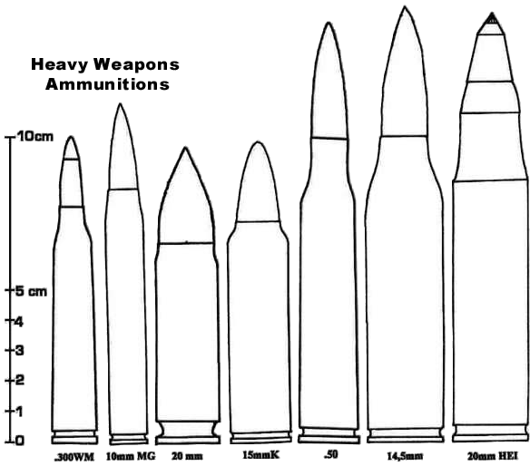
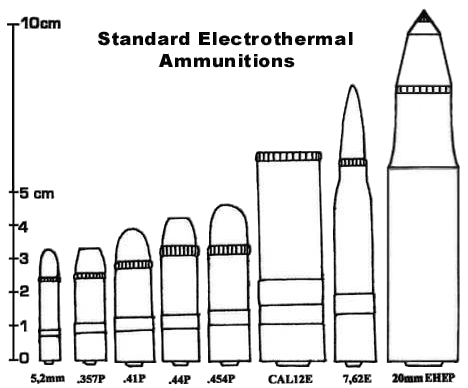

Les munitions suivantes sont d'usage exclusivement militaire (à l'exception de la première, qui est un gros calibre de chasse), donc inutile d'aller envoyer vos persos à l'armurerie du coin pour en acheter. D'autres munitions encore plus imposantes existent, mais il faut alors plutôt parler d'obus !
| Abréviation .338LM |
Désignation .338 Lapua Magnum |
Dégâts 7D6+2 |
Prix des 10 15 eb |
AP : ces munitions réduisent de moitié la protection des armures. Dégâts normaux à la chair.

Le principe des munitions électrothermal est simple : il s'agit de faire passer un courant très intense dans de l'eau. Celle-ci se vaporise instantanément et l'énergie dégagée expulse le projectile avec une puissance supérieure à celle dégagée par un volume équivalent de poudre. Les avancées en matière de batteries ont permis cette découverte, même si l'utilisation en mode automatique de telles armes reste très rares. Une arme électrothermale possède plusieurs avantages : elle est plus silencieuse, même si la détonation est clairement audible à 200 mètres, elle ne dégage pas de flamme, ce qui la rend plus discrète la nuit. De jour néanmoins, le nuage de vapeur expulsé de l'arme identifie clairement le tireur.
Les armes électrothermales sont, à l'exception des moins puissantes, interdites au port.
| Abréviation 5,2 mm |
Désignation 5,2 mm électrothermale Tsunami |
Dégâts 2D6+3 |
Prix des 10 $5 |
